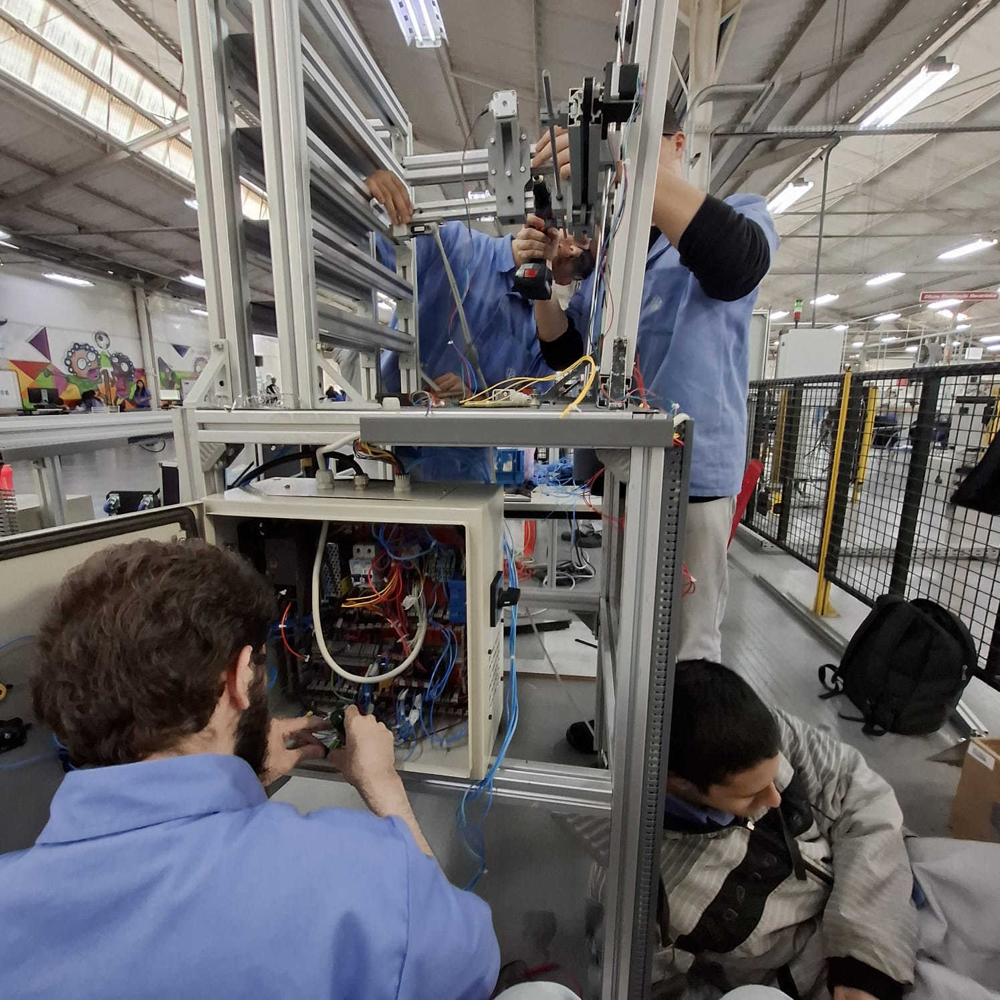

Engenharia de Software
Atualmente curso Engenharia de Software pela UNINTER, com início em 2025.
Portfólio Pessoal
Estudante de Engenharia de Software, técnico em Mecatrônica e profissional da indústria automotiva.
Entrar em contatoMeu nome é Leonardo Faustino, tenho 19 anos e atualmente trabalho na Volkswagen, em São Bernardo do Campo, como montador. Tenho interesse por carros, programação, engenharia e tecnologia.
No meu tempo livre, gosto de ler, escutar podcasts e jogar jogos do estilo soulslike. Também gosto de estudar assuntos ligados à tecnologia, como Arch Linux, inteligência artificial, criptomoedas, blockchain, desenvolvimento de software e inovação automotiva.
Meu objetivo profissional é crescer dentro da Volkswagen e utilizar meus conhecimentos em software e mecatrônica para contribuir com a evolução de novas tecnologias aplicadas aos carros do futuro. Busco unir minha experiência prática na indústria automotiva com o desenvolvimento de soluções tecnológicas modernas.
Atualmente curso Engenharia de Software pela UNINTER, com início em 2025.
Formação técnica voltada para áreas como automação, mecânica, eletrônica e integração de sistemas.
Ensino Médio completo.
Inglês em nível C1, utilizado para estudos técnicos, programação e conteúdos internacionais de tecnologia.

Projeto voltado ao estudo e à aplicação de um manipulador cartesiano vertical, responsável pelo estoque de uma mini linha de montagem. O sistema está inserido no contexto da automação industrial e contribui para a organização e movimentação de componentes dentro do processo produtivo.
A experiência com esse projeto reforçou meus conhecimentos em mecatrônica, integração de sistemas, estrutura mecânica e funcionamento de soluções automatizadas aplicadas ao ambiente industrial.
Site desenvolvido com HTML5, CSS3 e JavaScript para apresentar minhas informações pessoais, formação, interesses, projetos e formas de contato.
O projeto aplica conceitos fundamentais de desenvolvimento web, como estruturação de páginas, estilização com CSS, navegação por âncoras, responsividade e validação de formulário com JavaScript puro.
Entre em contato comigo por e-mail ou pelo GitHub.
E-mail: leonardoluiz9000@gmail.com
GitHub: leonardoluiz9000-dev